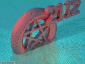
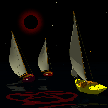
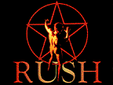
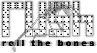
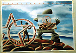
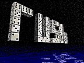
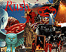
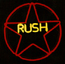
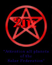

By The Fans
This section is for those fans inspired by Rush enough to base poems,
pictures, song parodies and stories on their music. If you have something
you'd like to contribute (picture, parody, poem, story, whatever!)
drop me a line at meg@yyz.com.
Parodies
-
"Ask Me To Dance"
by Ian Nathan, based on "Ghost Of A Chance"
"Barbeque"
by Ed Chang, based on "Bravado"
"Bass Shop"
by Doug Taylor, based on "Face Up"
"Beersey"
by John W. Connelly, based on "Heresy"
"Between Right And Wrong"
by Dale R. Buske, based on "Between Sun and Moon"
"Between White and Wheat"
by The Breadman, based on "Between Sun and Moon"
"The Big Mac"
by Tom Lindaman, based on "The Big Wheel"
"The Big Mower"
by Ben Seigel, based on "The Big Money"
"The Big Turkey"
by Glen Reed, based on "The Big Money"
"The Big Wheel of Fortune"
by Dan Flanegan, based on "The Big Wheel"
"Blow Away The Snow"
by Simon Charles, based on "Carve Away The Stone"
"(Oldsmobile) Bravada"
by Jonathan Lentz, based on "Bravado"
"Bread Lenses"
by The Breadman, based on "Red Lenses"
"By-Tor and the Snow Cone"
by Tom Beaudoin, based on "By-Tor and the Snow Dog"
"Candidate"
by Peter Rein, based on "Animate"
"Candygram (for Alex)"
by Mike Sweger, based on "Anagram (for Mongo)"
"Can 'O Dew"
by Jeff Wenst, based on "Xanadu"
"Clinton's Bladder"
by Mike Sweger, based on "Jacob's Ladder"
"Cold Shower"
by Derek Linklater, based on "Cold Fire"
"Dave Smith"
by Michael Silverman, based on "The Big Money"
"Dentistry"
by Steven Horwitz, based on "Chemistry"
"Diane Sawyer"
by Jason Marley, based on "Tom Sawyer"
"Dominate"
by Rat & Dan, based on "Animate"
"Emissions"
by Mike Sweger, based on "Mission"
"The Enema Within"
by Arthur Treacher, based on "The Enemy Within"
"Everyday Pauly (Shore)"
by Dennis Pupello, based on "Everyday Glory"
"Fibbin'"
by Dennis F. Pupello, based on "Driven"
"Flat Tire"
by Arthur Treacher, based on "Cold Fire"
"Free Agent"
by Arthur Treacher, based on "Double Agent"
"Free Willy"
by Shawn Clayton Knight, based on "Free Will"
"Geddy Lee"
by Gene Head, based on "Jeremy" by Pearl Jam
"Geographa"
by Rat Sunnyvale, based on "Neurotica"
"Grocery Line"
by Robert Graves, based on "Dreamline"
"H. Ross Perot"
by Jared Strasburg, based on "Nobody's Hero"
"Headline"
by Tom Lindaman, based on "Dreamline"
"Hog Gears"
by Mike Sweger, based on "Dog Years"
"Hurl By Night"
by Scott Raby, based on "Fly By Night"
"I Hate My Life"
by Ken Maupin, based on "You Bet Your Life"
"I Think I'm Gonna Toss"
by Tom Beaudoin, based on "I Think I'm Going Bald"
"Jam The Phones"
by Tom Lindaman, based on "Roll The Bones"
"Jay Leno"
by Doug Taylor, based on "Bravado"
"Jurassic Park"
by Mark Jager, based on "Lakeside Park"
"The Kansas Project"
by Ed Russell, based on "The Manhattan Project"
"Kirby Sage"
by Mike Sweger, based on "Turn The Page"
"Late Show"
by Glen Reed, based on "Double Agent"
"Make Some Bread"
by The Breadman, based on "Take A Friend"
"Mobile Homes"
by Matt Van Horn, based on "Roll The Bones"
"Need Some Spam"
by Tom Lindaman, based on "Need Some Love"
"Neurology"
by Adrian Mariano, based on "Neurotica"
"New Rush Song"
by Eric Simpson, based on "New World Man"
"New Improoved Spam"
by Raa Amon Zepol, based on "New World Man"
"No Tide"
by Adrian Mariano, based on "Red Tide"
"Nobody's Gyro"
by James Humphreys, based on "Nobody's Hero"
"Nobody's Zero"
by Tom Beaudoin, based on "Nobody's Hero"
"The Parking Space"
by Nicole Youngman, based on "The Trees"
"The Parody Eccentric"
by Doug Taylor, based on "The Body Electric"
"Pass The Brew"
by Christopher Mermagen, based on "Roll The Bones"
"Payday"
by Paul Bryant, based on "Bastille Day"
"Pitch Bunt"
by Ed Chang, based on "Witch Hunt"
"Put It Out"
by Rat & Dan, based on "Stick It Out"
"Rockline"
by Ron Donez, based on "Dreamline"
"Satiate"
by Ed Chang, based on "Animate"
"Saturday Glory"
by John Dea, based on "Everyday Glory"
"Saurian Bore"
by Rat & Dan, based on "Alien Shore"
"Shift Up"
by Eric Thies, based on "Face Up"
"Sir Comestancis"
by Tom Beaudoin, based on "Circumstances"
"Somebody's Beer, Oh!"
by Arthur Treacher, based on "Nobody's Hero"
"Spamthem"
by Tom Beaudoin, based on "Anthem"
"Speed of Lust"
by Dennis Pupello, based on "The Speed of Love"
"Surf The Coast"
by Jordan Finkelstein, based on "Roll The Bones"
"Tip Hunt"
by Patrick Taylor, based on "Witch Hunt"
"Toast On A Lance"
by Tom Lindaman, based on "Ghost Of A Chance"
"2112"
by Raa Amon Zepol & Woody, based on "2112"
"Working Bill (Clinton)"
by Tom Beaudoin, based on "Working Man"
Stories & Misc.
-
"The Fall Of Megadon"
by Glen "Trroy" Reed, based on the song "2112"
"An Android on the Run"
by Ben Cirillo, based on "The Body Electric"
"A Rednecks Review of a Rush Concert"
by Nancy Salmon
"The Beavis and Butthead Version of 2112"
by Andrea Zane Tawil
"Rush On the Muppet Show"
by Andrea Zane Tawil
"A Not-Entirely-True Menu from The Orbit Room Cafe"
by Scott Bissett
"Cold Fire"
by Jordan Finkelstein (rated PG-13)
Pictures
|

By Chris Walker, 1995

"Gangster of Boats"
By David K. Drum, 1993

By Paul Broman, 1996

By Aaron Bycoffe, 1997

By Fabio Marcondes, 1998
|

By Jason Long, 1995

By Zebulon Pike DeMeerleer, 1996

Neon Sign
By Matthew C. Hoffman, 1997

By Aaron Bycoffe, 1997
|
|
{kind=link}
{kind=link}
{kind=link}
{kind=link}
{kind=link}
{kind=link}
{kind=link}
{kind=link}
{kind=link}